Our study of “nice” functions continues. The previous section showed how the first derivative of a function, \(\fp\text{,}\) can relay important information about \(f\text{.}\) We now apply the same technique to \(\fp\) itself, and learn what this tells us about \(f\text{.}\)
The key to studying \(\fp\) is to consider its derivative, namely \(\fp'\text{,}\) which is the second derivative of \(f\text{.}\) When \(\fp'\gt 0\text{,}\)\(\fp\) is increasing. When \(\fp'\lt 0\text{,}\)\(\fp \)is decreasing. \(\fp\) has relative maxima and minima where \(\fp'=0\) or is undefined.
This section explores how knowing information about \(\fpp\) gives information about \(f\text{.}\)
Subsection3.4.1Concavity
We begin with a definition, then explore its meaning.
Definition3.4.2.Concave Up and Concave Down.
Let \(f\) be continuous on an interval \(I\text{.}\) The graph of \(f\) is concave up on \(I\) if for any \(a\lt b\) in \(I\text{,}\)
Geometrically, the condition in (3.4.1) states that a graph is concave up if the midpoint of the secant line from \((a,f(a))\) to \((b,f(b))\) (and hence, the secant line itself) is above the graph \(y=f(x)\text{.}\) Similarly, (3.4.2) states that the secant line lies below the graph.
In order for equality to hold instead of (3.4.1) or (3.4.2), the function would have to be of the form \(f(x)=mx+c\text{,}\) in which case the graph is a straight line. Straight lines are considered to have no concavity.
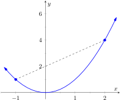(a)A graph that is concave up. Notice how the secant line lies above the graph.
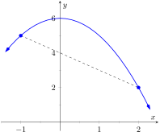(b)A graph that is concave down. Notice how the secant line lies below the graph.
Figure3.4.3.Illustrating the nature of concave up and concave down
Consider a function \(f\) such that \(f\) is continuous on \([a,b]\) and differentiable on \((a,b)\text{.}\) Note that \(\frac{a+b}{2}\) is the midpoint of the interval \([a,b]\text{.}\) By the The Mean Value Theorem of Differentiation, there must be a point \(c_1\) in \(\left[a,\frac{a+b}{2}\right]\) such that
Now, let us suppose that \(\fp(x)\) is an increasing function on \((a,b)\text{.}\) In that case, \(\fp(c_2)-\fp(c_1)\gt 0\text{,}\) and since \(b-a\gt 0\text{,}\) this implies that
which, by Definition 3.4.2 means that the graph of \(f\) is concave up.
Similarly, if \(\fp(x)\) is a decreasing function on \((a,b)\text{,}\) then the graph of \(f\) will be concave down. Using Theorem 3.3.5, we arrive at the following theorem.
Theorem3.4.4.
Let \(f\) be a continuous function on \([a,b]\) and differentiable on \((a,b)\text{.}\)
If \(\fpp(c) \gt 0\) for all \(c\) in \((a,b)\text{,}\) then \(f\) is concave up on \([a,b]\text{.}\)
If \(\fpp(c) \lt 0\) for all \(c\) in \((a,b)\text{,}\) then \(f\) is concave down on \([a,b]\text{.}\)
If \(\fpp(c) =0\) for all \(c\) in \((a,b)\text{,}\) then \(f\) is linear on \([a,b]\text{.}\)
The graph of a function \(f\) is concave up when \(\fp \)is increasing. That means as one looks at a concave up graph from left to right, the slopes of the tangent lines will be increasing. Consider Figure 3.4.5, where a concave up graph is shown along with some tangent lines. Notice how the tangent line on the left is steep, downward, corresponding to a lesser (large negative) value of \(\fp\text{.}\) On the right, the tangent line is steep, upward, corresponding to a greater (large positive) value of \(\fp\text{.}\)
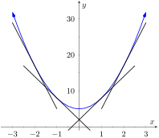
Figure3.4.5.A function \(f\) with a concave up graph. Notice how the slopes of the tangent lines, when looking from left to right, are increasing. (The slope values pictured are \(-12, -6, 6 \) and \(12\)).
If a function is decreasing and concave up, then its rate of decrease is slowing; it is “leveling off.” You can see this in the left side of Figure 3.4.5. If the function is increasing and concave up, then the rate of increase is increasing. The function is increasing at a faster and faster rate. You can see this in the right side of Figure 3.4.5.
Now consider a function which is concave down. We essentially repeat the above paragraphs with slight variation.
The graph of a function \(f\) is concave down when \(\fp \)is decreasing. That means as one looks at a concave down graph from left to right, the slopes of the tangent lines will be decreasing. Consider Figure 3.4.6, where a concave down graph is shown along with some tangent lines. Notice how the tangent line on the left is steep, upward, corresponding to a greater (large positive) value of \(\fp\text{.}\) On the right, the tangent line is steep, downward, corresponding to a lesser (large negative) value of \(\fp\text{.}\)
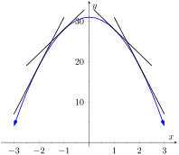
Figure3.4.6.A function \(f\) with a concave down graph. Notice how the slopes of the tangent lines, when looking from left to right, are decreasing.
If a function is increasing and concave down, then its rate of increase is slowing; it is “leveling off.” If the function is decreasing and concave down, then the rate of decrease is decreasing. The function is decreasing at a faster and faster rate.
Our definition of concave up and concave down is given in terms of when the first derivative is increasing or decreasing. We can apply the results of the previous section to find intervals on which a graph is concave up or down. That is, we recognize that \(\fp\) is increasing when \(\fpp \gt 0\text{,}\) etc.
Theorem3.4.7.Test for Concavity.
Let \(f\) be twice differentiable on an interval \(I\text{.}\) The graph of \(f\) is concave up if \(\fpp \gt 0\) on \(I\text{,}\) and is concave down if \(\fpp\lt 0\) on \(I\text{.}\)
(a)\(\fp\gt 0\text{,}\)\(f\) increasing; \(\fpp\lt0\text{,}\)\(f\) is concave down
(b)\(\fp\lt0\text{,}\)\(f\) decreasing; \(\fpp\lt0\text{,}\)\(f\) is concave down
(c)\(\fp\lt0\text{,}\)\(f\) decreasing; \(\fpp\gt 0\text{,}\)\(f\) is concave up
(d)\(\fp\gt 0\text{,}\)\(f\) increasing; \(\fpp\gt 0\text{,}\)\(f\) is concave up
Figure3.4.8.Demonstrating the four ways that concavity interacts with increasing/decreasing, along with the relationships with the first and second derivatives
If knowing where a graph is concave up/down is important, it makes sense that the places where the graph changes from one to the other is also important. This leads us to a definition.
Definition3.4.9.Point of Inflection.
A point of inflection is a point on the graph of \(f\) at which the concavity of \(f\) changes.
Figure 3.4.10 shows a graph of a function with inflection points labeled.
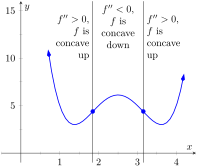
Figure3.4.10.A graph of a function with its inflection points marked. The intervals where concave up/down are also indicated.
If the concavity of \(f\) changes at a point \((c,f(c))\text{,}\) then \(\fp \)is changing from increasing to decreasing (or, decreasing to increasing) at \(x=c\text{.}\) That means that the sign of \(\fpp\)is changing from positive to negative (or, negative to positive) at \(x=c\text{.}\) A sign change may occur when \(\fpp=0\) or \(\fpp\) is undefined. This leads to the following theorem.
Theorem3.4.11.Points of Inflection.
If \((c,f(c))\) is a point of inflection on the graph of \(f\text{,}\) then either \(\fpp(c)=0\) or \(\fpp\) is not defined at \(c\text{.}\)
We have identified the concepts of concavity and points of inflection. It is now time to practice using these concepts; given a function, we should be able to find its points of inflection and identify intervals on which it is concave up or down. We do so in the following examples.
Example3.4.12.Finding intervals of concave up/down, inflection points.
Let \(f(x)=x^3-3x+1\text{.}\) Find the inflection points of \(f\) and the intervals on which it is concave up/down.
We start by finding \(\fp(x)=3x^2-3\) and \(\fpp(x)=6x\text{.}\) To find the inflection points, we use Theorem 3.4.11 and find where \(\fpp(x)=0\) or where \(\fpp \)is undefined. We find \(\fpp \)is always defined, and is \(0\) only when \(x=0\text{.}\) So the point \((0,f(0))=(0,1)\) is the only possible point of inflection.
This possible inflection point divides the real line into two intervals, \((-\infty,0)\) and \((0,\infty)\text{.}\) We use a process similar to the one used in the previous section to determine increasing/decreasing. Pick any \(c\lt 0\text{;}\)\(\fpp(c)\lt 0\) so \(f\) is concave down on \((-\infty,0)\text{.}\) Pick any \(c\gt 0\text{;}\)\(\fpp(c)\gt 0\) so \(f\) is concave up on \((0,\infty)\text{.}\) Since the concavity changes at \(x=0\text{,}\) the point \((0,1)\) is an inflection point.
The number line in Figure 3.4.13 illustrates the process of determining concavity; Figure 3.4.14 shows a graph of \(f\) and \(\fpp\text{,}\) confirming our results. Notice how \(f\) is concave down precisely when \(\fpp(x)\lt 0\) and concave up when \(\fpp(x)\gt 0\text{.}\)
Figure3.4.13.A number line determining the concavity of \(f\) in Example 3.4.12
To find the possible points of inflection, we seek to find where \(\fpp(x)=0\) and where \(\fpp\) is not defined. Solving \(\fpp(x)=0\) reduces to solving \(2x(x^2+3)=0\text{;}\) we find \(x=0\text{.}\) We find that \(\fpp \)is not defined when \(x=\pm 1\text{,}\) for then the denominator of \(\fpp \)is \(0\text{.}\) We also note that \(f\) itself is not defined at \(x=\pm1\text{,}\) having a domain of \((-\infty,-1)\cup(-1,1)\cup(1,\infty)\text{.}\) Since the domain of \(f\) is the union of three intervals, it makes sense that the concavity of \(f\) could switch across intervals. We technically cannot say that \(f\) has a point of inflection at \(x=\pm1\) as they are not part of the domain, but we must still consider these \(x\)-values to be important and will include them in our number line.
The important \(x\)-values at which concavity might switch are \(x=-1\text{,}\)\(x=0\) and \(x=1\text{,}\) which split the number line into four intervals as shown in Figure 3.4.16. We determine the concavity on each. Keep in mind that all we are concerned with is the sign of \(\fpp \)on the interval.
Interval 1: \((-\infty,-1)\)
Select a number \(c\) in this interval with a large magnitude (for instance, \(c=-100\)). The denominator of \(\fp'(x)\) will be positive. In the numerator, the \(\left(c^2+3\right)\) factor will be positive and the \(2c\) factor will be negative. Thus the numerator is negative and \(\fpp(c)\) is negative. We conclude \(f\) is concave down on \((-\infty,-1)\text{.}\)
Interval 2: \((-1,0)\)
For any number \(c\) in this interval, the factor \(2c\) in the numerator will be negative, the factor \(\left(c^2+3\right)\) in the numerator will be positive, and the factor \(\left(c^2-1\right)^3\) in the denominator will be negative. Thus \(\fpp(c)\gt 0\) and \(f\) is concave up on this interval.
Interval 3: \((0,1)\)
Any number \(c\) in this interval will be positive and “small.” Thus the numerator is positive while the denominator is negative. Thus \(\fpp(c)\lt 0\) and \(f\) is concave down on this interval.
Interval 4: \((1,\infty)\)
Choose a large value for \(c\text{.}\) It is evident that \(\fpp(c)\gt 0\text{,}\) so we conclude that \(f\) is concave up on \((1,\infty)\text{.}\)
We conclude that \(f\) is concave up on \((-1,0)\) and \((1,\infty)\) and concave down on \((-\infty,-1)\) and \((0,1)\text{.}\) There is only one point of inflection, \((0,0)\text{,}\) as \(f\) is not defined at \(x=\pm 1\text{.}\) Our work is confirmed by the graph of \(f\) in Figure 3.4.17. Notice how \(f\) is concave up whenever \(\fpp\)is positive, and concave down when \(\fpp\)is negative. The inflection in \(f\) occurs where \(\fpp\) changes sign.
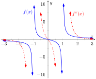
Figure3.4.17.A graph of \(f(x)\) and \(\fpp(x)\) in Example 3.4.15
Recall that relative maxima and minima of \(f\) are found at critical points of \(f\text{;}\) that is, they are found when \(\fp(x)=0\) or when \(\fp\) is undefined. Likewise, the relative maxima and minima of \(\fp \)are found when \(\fpp(x)=0\) or when \(\fpp \)is undefined; note that these are the inflection points of \(f\text{.}\)
What does a “relative maximum of \(\fp\)” mean? The derivative measures the rate of change of \(f\text{;}\) maximizing \(\fp\) means finding where \(f\) is increasing the most — where \(f\) has the steepest tangent line. A similar statement can be made for minimizing \(\fp\text{;}\) it corresponds to where \(f\) has the steepest negatively-sloped tangent line.
We utilize this concept in the next example.
Example3.4.18.Understanding inflection points.
The sales of a certain product over a three-year span are modeled by \(S(t)= t^4-8t^2+20\text{,}\) where \(t\) is the time in years, shown in Figure 3.4.19. Over the first two years, sales are decreasing. Find the point at which sales are decreasing at their greatest rate.
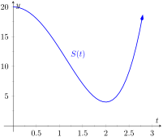
Figure3.4.19.A graph of \(S(t)\) in Example 3.4.18, modeling the sale of a product over time
We want to maximize the rate of decrease, which is to say, we want to find where \(S'\) has a minimum. To do this, we find where \(S''\) is \(0\) and \(S''\) changes from negative to positive. We find \(S'(t)=4t^3-16t\) and \(S''(t)=12t^2-16\text{.}\) Setting \(S''(t)=0\) and solving, we get \(t=\sqrt{4/3}\approx 1.16\) (we ignore the negative solution for \(t\) since it does not lie in the domain of our function \(S\)).
Since \(S''(1)=-4\lt 0\) and \(S''(2)=32\gt 0\text{,}\) we can say \(S'(\sqrt{4/3})\) is a local minimum of \(S'\text{.}\) This is both the inflection point and the point of maximum decrease. This is the point at which things first start looking up for the company. After the inflection point, sales are still decreasing, but not decreasing quite as quickly as they had been.
A graph of \(S(t)\) and \(S'(t)\) is given in Figure 3.4.20. When \(S'(t)\lt 0\text{,}\) sales are decreasing; note how at \(t\approx 1.16\text{,}\)\(S'(t)\) is minimized. That is, sales are decreasing at the fastest rate at \(t\approx 1.16\text{.}\) On the interval of \((1.16,2)\text{,}\)\(S\) is decreasing but concave up, so the decline in sales is “leveling off.”
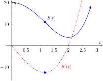
Figure3.4.20.A graph of \(S(t)\) in Example 3.4.18, along with \(S'(t)\)
Not every critical point corresponds to a relative extrema; \(f(x)=x^3\) has a critical point at \((0,0)\) but no relative maximum or minimum. Likewise, just because \(\fpp(x)=0\) we cannot conclude concavity changes at that point. We were careful before to use terminology “possible point of inflection” since we needed to check to see if the concavity changed. The canonical example of \(\fpp(x)=0\)without concavity changing is \(f(x)=x^4\text{.}\) At \(x=0\text{,}\)\(\fpp(x)=0\) but \(f\) is always concave up, as shown in Figure 3.4.21.
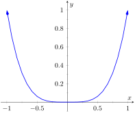
Figure3.4.21.A graph of \(f(x) = x^4\text{.}\) Clearly \(f\) is always concave up, despite the fact that \(\fpp(x) = 0\) when \(x=0\text{.}\) It this example, the possible point of inflection \((0,0)\) is not a point of inflection.
Subsection3.4.2The Second Derivative Test
The first derivative of a function gave us a test to find if a critical value corresponded to a relative maximum, minimum, or neither. The second derivative gives us another way to test if a critical point is a local maximum or minimum. The following theorem officially states something that is intuitive: if a critical value occurs in a region where a function \(f\) is concave up, then that critical value must correspond to a relative minimum of \(f\text{,}\) etc. See Figure 3.4.22 for a visualization of this.
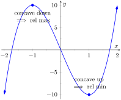
Figure3.4.22.Demonstrating the fact that relative maxima occur when the graph is concave down and relative minima occur when the graph is concave up
Theorem3.4.23.The Second Derivative Test.
Let \(c\) be a critical value of \(f\) where \(\fpp(c)\) is defined.
If \(\fpp(c)\gt 0\text{,}\) then \(f\) has a local minimum at \((c,f(c))\text{.}\)
If \(\fpp(c)\lt 0\text{,}\) then \(f\) has a local maximum at \((c,f(c))\text{.}\)
The Second Derivative Test relates to the First Derivative Test in the following way. If \(\fpp(c)\gt 0\text{,}\) then the graph is concave up at a critical point \(c\) and \(\fp\) itself is growing. Since \(\fp(c)=0\) and \(\fp\) is growing at \(c\text{,}\) then it must go from negative to positive at \(c\text{.}\) This means the function goes from decreasing to increasing, indicating a local minimum at \(c\text{.}\)
Example3.4.25.Using the Second Derivative Test.
Let \(f(x)=100/x + x\text{.}\) Find the critical points of \(f\) and use the The Second Derivative Test to label them as relative maxima or minima.
We find \(\fp(x)=-100/x^2+1\) and \(\fpp(x) = 200/x^3\text{.}\) We set \(\fp(x)=0\) and solve for \(x\) to find the critical values (note that \(\fp\) is not defined at \(x=0\text{,}\) but neither is \(f\) so this is not a critical value.) We find the critical values are \(x=\pm 10\text{.}\) We now evaluate the second derivative at these critical numbers. Evaluating \(\fpp(10)=0.1\gt 0\text{,}\) so there is a local minimum at \(x=10\text{.}\) Evaluating \(\fpp(-10)=-0.1\lt 0\text{,}\) determining a relative maximum at \(x=-10\text{.}\) These results are confirmed in Figure 3.4.26.
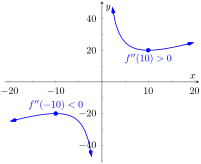
Figure3.4.26.A graph of \(f(x)\) in Example 3.4.25. The second derivative is evaluated at each critical point. When the graph is concave up, the critical point represents a local minimum; when the graph is concave down, the critical point represents a local maximum.
We have been learning how the first and second derivatives of a function relate information about the graph of that function. We have found intervals of increasing and decreasing, intervals where the graph is concave up and down, along with the locations of relative extrema and inflection points. In Chapter 1 we saw how limits explained asymptotic behavior. In the next section we combine all of this information to produce accurate sketches of functions.
Exercises3.4.3Exercises
Terms and Concepts
1.
Sketch a graph of a function \(f(x)\) that is concave up on \((0,1)\) and is concave down on \((1,2)\text{.}\)
2.
Sketch a graph of a function \(f(x)\) that is:
increasing, concave up on \((0,1)\text{,}\)
increasing, concave down on \((1,2)\text{,}\)
decreasing, concave down on \((2,3)\text{,}\) and
increasing, concave down on \((3,4)\text{.}\)
3.
Is is possible for a function to be increasing and concave down on \((0,\infty)\) with a horizontal asymptote of \(y=1\text{?}\) If so, give a sketch of such a function.
4.
Is is possible for a function to be increasing and concave up on \((0,\infty)\) with a horizontal asymptote of \(y=1\text{?}\) If so, give a sketch of such a function.
Problems
Exercise Group.
A function \(f(x)\) is given. Graph \(f\) and \(\fpp\) on the same axes (using technology is permitted) and verify Theorem 3.4.7.
5.
\(f(x) = -7x+3\)
6.
\(f(x) = -4x^2+3x-8\)
7.
\(f(x) = 4x^2+3x-8\)
8.
\(f(x) = x^3-3x^2+x-1\)
9.
\(f(x) = -x^3+x^2-2x+5\)
10.
\(f(x) = \sin(x)\)
11.
\(f(x) = \tan(x)\)
12.
\(f(x) = \dfrac{1}{x^2+1}\)
13.
\(f(x) = \frac{1}{x}\)
14.
\(f(x) = \frac{1}{x^2}\)
Exercise Group.
A function \(f(x)\) is given.
Find the possible points of inflection of \(f\text{.}\)
Create a number line to determine the intervals on which \(f\) is concave up or concave down.
\(f(x)={\sec\!\left(x\right)}\) on \((-3\pi/2,3\pi/2)\)
23.
\(f(x)={\frac{1}{x^{2}+6x+18}}\)
24.
\(f(x)={\frac{1}{x^{2}-x-2}}\)
25.
\(f(x)={\sin\!\left(x\right)+\cos\!\left(x\right)}\) on \((-\pi,\pi)\)
26.
\(f(x)={x^{2}e^{x}}\)
27.
\(f(x)={x^{2}\ln\!\left(x\right)}\)
28.
\(f(x)={e^{-x^{2}}}\)
Exercise Group.
A function \(f(x)\) is given. Find the critical points of \(f\) and use the Second Derivative Test, when possible, to determine the relative extrema. (Note: these are the same functions as in Exercise Group 15–28.)
29.
\(f(x)={x^{2}+18x+81}\)
30.
\(f(x)={-x^{2}-7x-1}\)
31.
\(f(x)={x^{3}-3x-7}\)
32.
\(f(x)={-3x^{3}+5x^{2}-10x+3}\)
33.
\(f(x)={\frac{x^{4}}{4}+4\frac{x^{3}}{3}-8x+3}\)
34.
\(f(x)={-3x^{4}+32x^{3}-66x^{2}-240x+7}\)
35.
\(f(x)={x^{4}-8x^{3}+24x^{2}-32x+16}\)
36.
\(f(x)={\sec\!\left(x\right)}\) on \((-3\pi/2,3\pi/2)\)
37.
\(f(x)={\frac{1}{x^{2}-16x+65}}\)
38.
\(f(x)={\frac{1}{x^{2}+5x-36}}\)
39.
\(f(x)={\sin\!\left(x\right)+\cos\!\left(x\right)}\) on \((-\pi,\pi)\)
40.
\(f(x)={x^{2}e^{x}}\)
41.
\(f(x)={x^{2}\ln\!\left(x\right)}\)
42.
\(f(x)={e^{-x^{2}}}\)
Exercise Group.
A function \(f(x)\) is given. Find the \(x\) values where \(\fp(x)\) has a relative maximum or minimum. (Note: these are the same functions as in Exercise Group 15–28.)